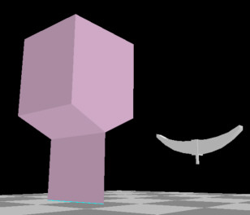

Inventive Uses For The Pipe Builder Plugin
by Paul "Decapod" Gausden
Copyright © 2004
1. Locomotive Spring Hangers
- Add a cube to the scene.
- Divide the two lower edges into two (max/min Z) and join the two new points with the edge operation.
- Drag the new edge down slightly with the right mouse button
- Extrude the new edge and extend down.

- Resize the whole object to about 0.03 wider and 0.03 shorter than the spring object.
- Select the edges at both ends and run the pipe builder plugin - 4 sides, 0.025 diameter. Position over the spring... et voila! Relatively low poly (48 each) due to the lack of ends.
Incidentally, if you need covered ends on a pipe built with the plugin, the Solidify operation does the trick.
Comment: "Very handy tip Paul. From the information you have given I can see many uses in addition to Train models - Bicycle frames, Candlelabra, any types of hose, chains etc" (Brentton Smith)